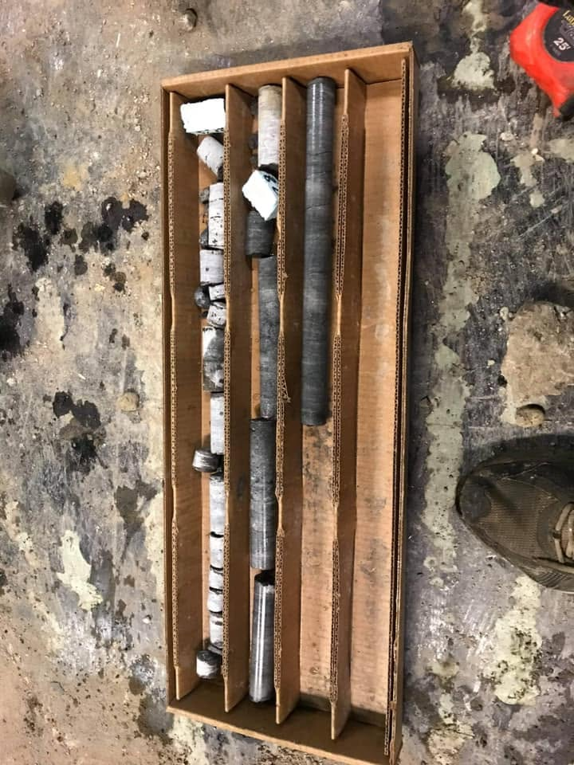

Forage géotechnique
Caractériser les sols et le roc pour concevoir les fondations, les ouvrages et les infrastructures.
- Essais de pénétration standard
- Tarière évidée
- Carottage du roc
- Tubes à paroi mince
- Scissomètre
- Piézomètres
Forages géotechniques et environnementaux pour les firmes de génie-conseil, les consultants et les entrepreneurs.

Nous forons, échantillonnons et instrumentons selon le programme de votre firme, et chaque forage est documenté.

Caractériser les sols et le roc pour concevoir les fondations, les ouvrages et les infrastructures.

Documenter la qualité des sols et de l'eau souterraine : stations-service, terrains industriels, transactions immobilières.

Sous-sols, commerces, cours arrière : notre foreuse compacte sur chenilles se rend là où les foreuses sur camion ne peuvent pas aller.

Des rues de Montréal aux côtes rocheuses du Nord, on se déplace avec la foreuse et l'équipe jusqu'à votre chantier.
Demander une soumissionChaque forage est documenté sur place, pour que vos ingénieurs conçoivent sur des données, pas sur des hypothèses.
Été comme hiver, en ville comme au bout de la route.


Envoyez-nous le plan de localisation, le nombre de forages et la profondeur visée. On vous revient avec un prix.